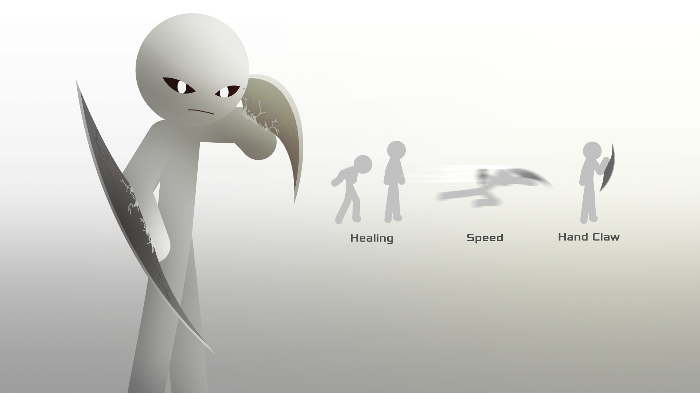
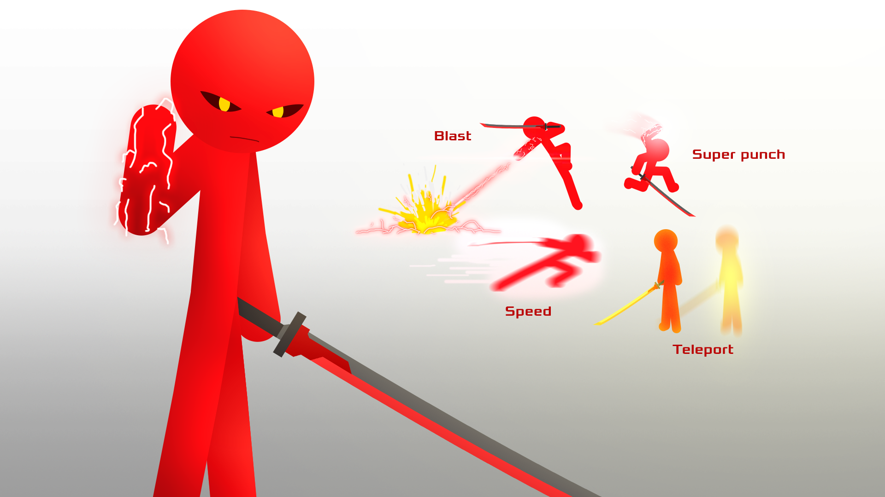

Layer Green Screen ini tidak pakai gambar background cukup kasih full hijau dibelakangnya ini hanya ditampilkan Stickman Abu-abu dan Merah termasuk juga asap (smoke), senjata (meapon/sword) atau benda lain sebagainya.
Layer Black Screen hanya ditampilkan pencahayaan seperti api, cahaya, listrik, laser, bloom, glow atau cahaya lain sebagainya.
Sesuaikan tinggi badan yang sudah saya tandai.
Kalian punya zona aga kecil. Pastikan tidak mengenai yang saya tandai warna merah. Kecuali efek.
Ini ilustrasi yang saya mau kira-kira begini.
Saya sarankan pake ini untuk input ke apk kalau kalian perlu penanda. Download aset yang saya berikan diatas.
Setelah animasi kalian selesai, export animasi kalian pake rekomendai format .mp4 dan kasih nama kalian seperti
Pastikan 2 video tersebut sama FPSnya.
Bikin folder masing-masing di Drive supaya rapih

Kalau kalian ga tau caranya, Klik atau [ Baru ] Lalu bikin folder lalu kasih nama. Pastikan kamu sudah di folder sediri. Klik lagi lalu klik Upload file lalu cari data kalian
Untuk Android kalo masih belum punya Aplikasi Drive silahkan download di Play Store
(Kalian ga harus ikuti efek yang di gambar saya berikan, yang penting kekuatan mereka ditampilkan), Boleh pilih kekuatan mereka yang kamu bisa kalo sebagian gabisa.
Pisau besar di tangannya, Healing, dan Speed.
Abu-abu bisa mengeluarkan pisau ditangannya bagaikan Wolverine, gerakannya sangat cepat, Abu-abu bisa healing maupun patah tulang maupun di sobek dan
Ciri has warna kekuatan : Putih
Bisa tembak dari tanganya, Pukulan Super, Teleport, dan Speed.
Merah bisa mengeluarkan tembakan di tangannya seperti Captain Marvel, Merah memiliki kekuatan pukulan keras bagaikan Power Stone (Infinity Stone), gerakannya sangat cepat, Merah bisa teleport dimanapun dia mau dan
Ciri has warna kekuatan : Merah
